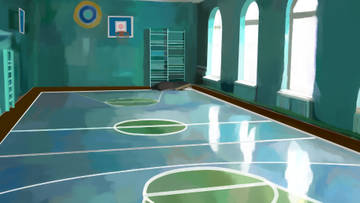
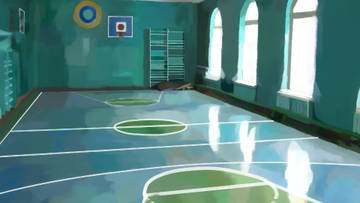
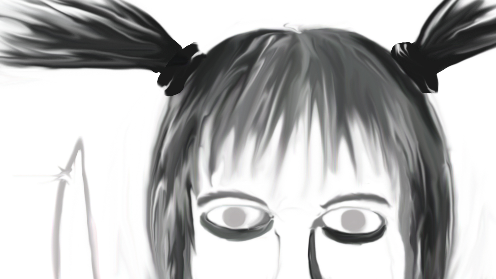

Попытался немного улучшить качество фона... Кто автор, заранее извините, если исправления плохи. А исправления (ну или ухудшения  ) невелики. Немного выровнял окна, другой пол вокруг площадки, немного детализирована "шведская стенка" и прочие мелочи... Если хоть что то получилось неплохо, то продолжу. Щас скину как было, для сравнения)
) невелики. Немного выровнял окна, другой пол вокруг площадки, немного детализирована "шведская стенка" и прочие мелочи... Если хоть что то получилось неплохо, то продолжу. Щас скину как было, для сравнения)
Фанарт и коллажи на тему
Сообщений 91 страница 94 из 94
Поделиться912016-08-28 17:01:01
- Ньюфаг

- Зарегистрирован: 2015-10-23
- Сообщений: 1
- Последний визит:
2017-11-04 17:52:07
Поделиться922016-08-28 17:02:47
- Ньюфаг
- Зарегистрирован: 2015-10-23
- Сообщений: 1
- Последний визит:
2017-11-04 17:52:07
Самое правое окно оригинальное (на моём исправлении) чтобы было видно разницу. А вот как было 
Поделиться932016-09-04 14:56:19
- Ньюфаг

- Зарегистрирован: 2015-10-21
- Сообщений: 43
- Пол: Мужской
- Возраст: 29 [1989-01-20]
- Последний визит:
2017-11-28 14:00:47
Второй спойлер опасен
Свернутый текст
Поделиться942016-09-07 00:37:41
- Ньюфаг

- Зарегистрирован: 2016-03-11
- Сообщений: 18
- Последний визит:
2017-06-19 16:25:37
epicfailman написал(а):
вначале 2-3 фона или CG, дальше по паре-тройке в месяц. зп свободно позволит.
Серьезная з/п, однако.